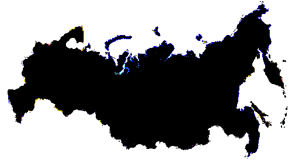
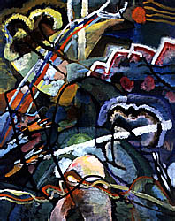
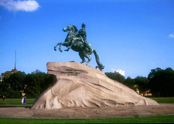
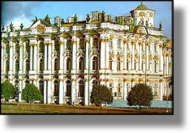
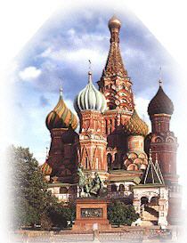
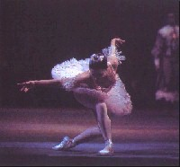

Page index / courses
RU 412
RUSSIAN 412
20th Century Russia

1900-1910 1910-1920 1920-1930 1930-1940 1940-1950 1950-1960 1960-1970 1970-1980 1980-1990 1990-2000

Wassily Kandinsky The Bronze Horseman "Sketch for Painting with White Border"

The Hermitage St. Basil's Cathedral
- Ballet